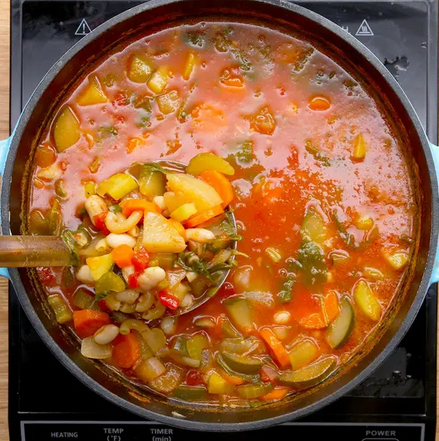

Summer Vegetable Minestrone Soup

Description:
Healthy, tasty, mouthwatering soupy goodness! What more could someone ask for?
Ingredients:
- 1 tablespoon oil
- 2 carrots, chopped
- 2 stalks celery, chopped
- 1 onion, chopped
- 1 teaspoon salt
- ½ teaspoon black pepper
- 1 potato, peeled and cubed
- 3 cloves garlic, minced
- 28 oz diced tomato, 1 can
- 8 cups vegetable stock
- 2 zucchinis, diced
- 15 oz cannellini bean, 1 can, rinsed and drained
- 3 cups spinach
- 2 cups elbow pasta
Steps:
- Combine oil, carrots, celery, onion, salt, pepper, and potato in a large pot over medium heat for 3 minutes.
- Add garlic and stir for one minute. Mix in diced tomatoes, vegetable stock, and zucchini.
- Bring to a boil.
- Place the lid on the pot, and simmer for 45 minutes.
- Add cannellini beans, spinach, and pasta. Cover and simmer 10 minutes.
- Allow to cool before serving.
- Enjoy!